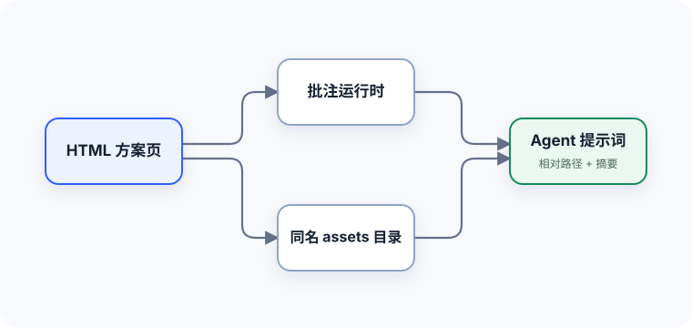

方案确认流程
标准 Mermaid 容器；网络模块不可用时仍显示可读源内容。
flowchart LR
A[浏览 HTML 方案] --> B[局部批注]
A --> C[页面内确认]
B --> D{提交方式}
C --> D
D -->|单条| E[局部执行]
D -->|全量| F[执行或复制提示词]
Axhub Make · HTML Review
页面内容保持自由，评审人可以做局部批注、文本批注和页面内选择。批注模式下，选择结果会直接生成普通批注节点。
批注模式下，改选会更新这个问题已有的批注节点，不会重复新增。
尚未选择
多选结果会作为一个整体更新批注。全部取消后，这个问题的批注会被清除。
尚未选择
在批注模式下点击图表或其子元素，批注卡会出现编辑入口。Mermaid 会转为新画布，Draw.io SVG 会打开现有编辑器。
标准 Mermaid 容器；网络模块不可用时仍显示可读源内容。
flowchart LR
A[浏览 HTML 方案] --> B[局部批注]
A --> C[页面内确认]
B --> D{提交方式}
C --> D
D -->|单条| E[局部执行]
D -->|全量| F[执行或复制提示词]
标准 Draw.io SVG 支撑文件；编辑结果保存在当前 HTML 同名 assets 目录。
